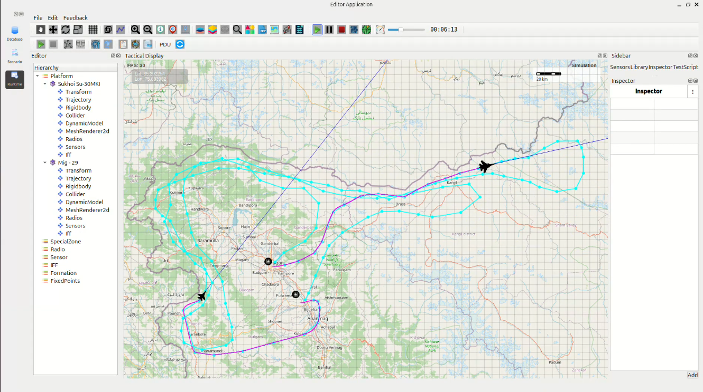

High-Speed Full-LoC Dominance Mission – Northern Sector
- MiG-29UPG Route:
Srinagar → Poonch → Uri → Kralpora → Drass → Kargil → Pahalgam
- Su-30MKI Route:
Srinagar → Drass → Kargil → Nubra-Shyok WLS → U-turn → Kargil → Drass → Kralpora → Uri → Poonch → Thanamandi → Tangmarg → Baramulla → Kupwara → Srinagar
{kind=link}

1. Mission Overview
Two Indian Air Force fighters launched simultaneously from Srinagar Air Force Station and executed extended supersonic reconnaissance sweeps at a configured MoveSpeed of 1750 km/h (Mach 1.55–1.60 sustained cruise).
Aircraft Route Summary (Round Trip)
Launch Base |
Aircraft |
Distance |
Observed Time |
Expected Time @1750 km/h |
|---|---|---|---|---|
Srinagar AFS |
MiG-29UPG Srinagar → Poonch → Uri → Kralpora → Drass → Kargil → Pahalgam (Awantipura) |
682 km |
23:24 |
23:20 |
Srinagar AFS |
Sukhoi Su-30MKI Srinagar → Drass → Kargil → Nubra-Shyok WLS (near Karakoram) → U-turn → Kargil → Drass → Kralpora → Uri → Poonch → Thanamandi → Tangmarg → Baramulla → Kupwara → Srinagar |
1,138 km |
39:02 |
38:58 |
2. Timing & Performance Analysis
Both flight durations matched theoretical values within 4–6 seconds.
Minor deviations resulted from:
Waypoint curvature
High-G turns
Climb/descent dynamics over Zojila and Karakoram passes
Supersonic drag effects
This confirms highly accurate aerodynamic and propulsion modeling at sustained supersonic speeds.
3. Sector Assessments
3.1 MiG-29UPG Route
Completed in 23 minutes 24 seconds.
Provided rapid, focused coverage of the southern and central LoC sectors with deep-look capability into Pakistani forward positions.
3.2 Su-30MKI Route
Completed in 39 minutes 02 seconds.
Achieved total imaging of the entire northern frontier from Poonch to Karakoram in a single sortie, with 120–140 km sensor reach into PoK and Gilgit-Baltistan.
4. Findings
Mission timings match sustained supersonic performance at 1750 km/h when run at normal speed.
At 4× fast-forward, turn-radius logic does not apply correctly: - Aircraft overshoot waypoints - Aircraft enter excessively wide turns
After the first waypoint at 4× speed: - Both aircraft lose the planned route - They begin orbiting tightly instead of continuing forward
Path-following & turn-radius enforcement work perfectly at 1× speed only.
5. Conclusion
The high-speed supersonic LoC surveillance mission demonstrates outstanding performance by MiG-29UPG and Su-30MKI platforms.
Both assigned routes were effectively covered within 23–39 minutes, validating the simulation as a robust tool for rapid-deployment border reconnaissance in high-threat mountainous regions.